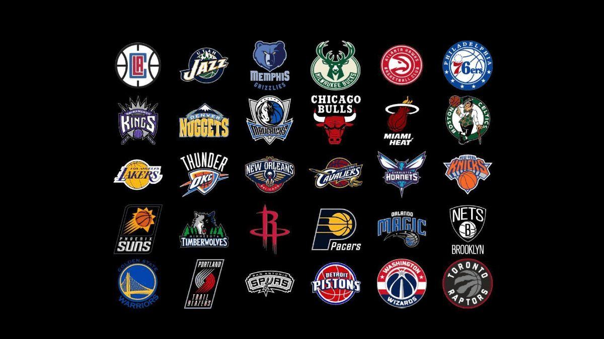

Benvenuto su Stepback! Stepback è il tuo portale definitivo per tutto ciò che riguarda la National Basketball Association ovvero la NBA. Ecco cosa offriamo:
Punteggi in Tempo Reale e Classifiche üèÄ Non perdere mai un aggiornamento, con i nostri link puoi vedere i punteggi in tempo reale e le classifiche delle squadre NBA. Segui le tue squadre preferite e rimani aggiornato sui loro progressi durante la stagione. Sei interessato a vedere tutto quasto? Vuoi vedere se la tua squadra preferita √® in una buona posizione ? clicca l'immagine con tutte le squadre qui a destra e verificalo tu stesso!
Storia della NBA üèÜ Immergiti nella ricca storia della NBA. Scopri come √® nata la lega, i suoi momenti più memorabili e come si √® evoluta nel corso degli anni.
Informazioni sulle Statistiche e sui Giocatori üìö Offriamo link sicuri e visionati da noi su informazioni dettagliate sulle statistiche dei giocatori di NBA di ogni squadra. Scopri di più sui tuoi giocatori preferiti e rimani al passo con le loro ultime prestazioni. Verificalo tu stesso cliccando l'immagine a destra e visualizzato le statistiche in tempo reale.
Vetrina di Prodotti Consigliati üõçÔ∏è Visita la nostra vetrina , la puoi trovare all'interno della sezione per le scarpe, li dovrai inserire accuratamente le tue caratteristiche di gioco e troverai le scarpe adatte a te. infine troverai anche altri prodotti e che tu stia cercando maglie, palloni o altri articoli da collezione, abbiamo qualcosa per te.

Grazie per aver scelto Stepback come tua fonte di informazioni sulla NBA. Speriamo che ti piaccia il tuo tempo qui!